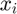
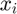
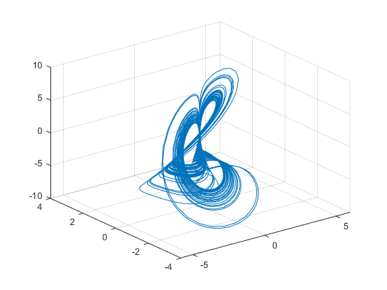
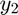
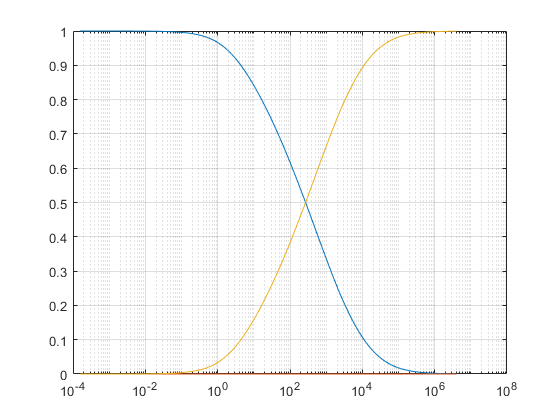
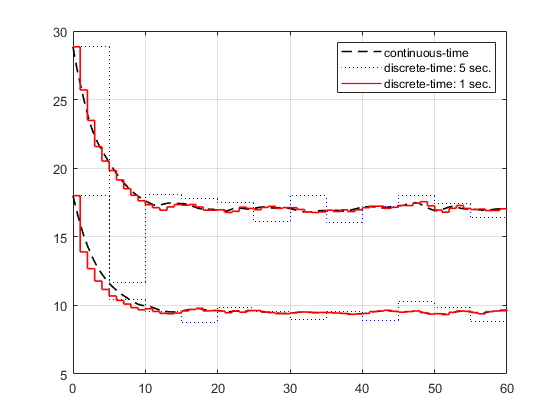

dmsim
simulated response of implicit/descriptor multilinear time invariant (iMTI) system to arbitrary input signals
Contents
Syntax
simout = dmsim(sys, x0) Simulated time response of autonomous iMTI system for the time fram from 0 to 10 and initial states x0.
simout = dmsim(sys, x0, ut) Simulated time response of autonomous iMTI system for the time frame of ut and initial states x0.
simout = dmsim(sys, x0, ut, u) Simulated time response of iMTI system with arbitrary input signals u (linear interpolated) at the time steps of ut and initial states x0. For continuous-time simulation use default ode-settings from Matlab.
simout = dmsim(sys, x0, ut, u, opt) Simulated time response of iMTI system with arbitrary input signals u (linear interpolated) at the time steps of ut and initial states x0, with using the ode-settings opt (defined with opt = odeset()). Only used for continuous-time simulation.
Description
The dmsim class serves as simulation class for implicit/descriptor multilinear time invariant (iMTI) models. Only differential index-1 systems are usable. The simulation will be performed automatically when creating a dmsim object by simout = dmsim(sys, x0, ut, u).
For continuous-time simulations Matlabs implementation of the variable order method ode15i() will be used. For discrete-time simulations an automated tearing approach will be used, described in [1], where the set of equations will be split into multiple subsets and explicit solvable subsets of equations will be identified, as well as implicit solvable subsets. For reordering the sparsity pattern, Matlabs implementation of the dulmage-mendelsohn decomposition dmperm() is used. The implicit solvable subsets will be solved using the Levenberg-Marquardt algorithm implementation of Matlabs nonlinear least-squares solver lsqnonlin().
Examples
Autonomous continuous-time simulation (including ode-settings): Sprott B Attractor
In [2] J. C. Sprott proposed chaotic attractor named Sprott A-S systems. The Sprott B attractor is described by the following differential equations
eq = ["dx1 = a*x2*x3";... "dx2 = x1 - b*x2";... "dx3 = c - x1*x2"];
The dmss model can be directly generated using the symbolic equations by
Ts = 0; sys = sym2dmss(eq, Ts, ["dx", "x", "u", "y"]);
where the timestep size is 0 for continuous time systems. Also it can be generated using the cpn-1 tensor format. Therefor first an empty hyCPN1() object needs to be generated, so its properties are accessable.
Ts = 0; H = hyCPN1(); H.F.stateDerivative = [1 0 0 0 0 0 0 0;... 0 1 0 0 0 0 0 0;... 0 0 1 0 0 0 0 0]; H.F.state = [0 0 0 0 1 0 0 1;... 0 0 0 1 0 1 0 1;... 0 0 0 1 0 0 0 0]; H.phi.equality = [-1 0 0 sym("a") 0 0 0 0;... 0 -1 0 0 1 -sym("b") 0 0;... 0 0 -1 0 0 0 sym("c") -1]; sys = dmss(H,Ts);
The equations can be displayed by
disp(sys.symbolicEquations)
a*x2*x3 - xp1 == 0 x1 - xp2 - b*x2 == 0 c - xp3 - x1*x2 == 0
where  are the state derivatives,  are states (differential variables),
are the state derivatives,  are states (differential variables),  are algebriac variables and
are algebriac variables and  are input signals.
are input signals.
For this example the parameters
params = [sym("a"), sym("b"), sym("c")];
are defined as
numParams = [0.4, 1.2, 1];
The symbolic parameter values must be replace by the numeric parameter values for the simulation.
sys = sys.replaceSymbolicParameters(params, numParams);
The Equations can be checked again by
disp(sys.symbolicEquations)
(2*x2*x3)/5 - xp1 == 0
x1 - (6*x2)/5 - xp2 == 0
1 - x1*x2 - xp3 == 0
Now the simulation can be done with creating a dmsim object with the dmss model as input, as well as initial states and a simulation time frame:
t = [0, 1e3]; x0 = [0.1, 0, 0]; opt = odeset('RelTol', 10.0^(-3),'AbsTol',10.0^(-7)); simout = dmsim(sys, x0, t, [], opt);
Seperation in 3 subset(s) with 3 subproblem(s), from which 3 are explicit solvable.
The simulation results can be accessed as the properties of the simulation object. Then the phase space can be portraited by Matlabs ploting functions
plot3(simout.x(:,1), simout.x(:,2), simout.x(:,3))
grid on
 Continuous-time simulation with algebraic constraint: robertson problem
The robertson problem can be written as a system of DAEs, which gives
eq = ["0 = dx1 + 0.04*x1 - 10^4*x2*y1";... "0 = dx2 - 0.04*x1 + 10^4*x2*y1 + (3*10^7)*x2^2";... "0 = x1 + x2 + y1 - 1"]
eq =
3×1 string array
"0 = dx1 + 0.04*x1 - 10^4*x2*y1"
"0 = dx2 - 0.04*x1 + 10^4*x2*y1 + (3*10^7)*x2^2"
"0 = x1 + x2 + y1 - 1"
As before the symbolic system of equations can be transfered into a dmss object by
Ts = 0; sys = sym2dmss(eq, Ts, ["dx", "x", "u", "y"]); disp(sys.symbolicEquations)
Reduced by 4 column(s) and 0 equation(s) with trivial Reduction due to duplications.
10000*x2*y1 - xp1 - x1/25 == 0
x1/25 - xp2 - 10000*x2*y1 - 30000000*x2*y2 == 0
1 - x2 - y1 - x1 == 0
y2 - x2 == 0
where are the state derivatives, are states (differential variables), are algebriac variables and are input signals. One can see that an auxiliary variable  and an according had been added due to the quadratic term.
Simulation can be performed by creating a dmsim object
t = [0, 4e6]; x0 = [1, 0]; simout = dmsim(sys, x0, t); semilogx(simout.tsim, simout.x(:,1)) hold on semilogx(simout.tsim, simout.x(:,2)) semilogx(simout.tsim, simout.y(:,1)) grid on hold off
Seperation in 1 subset(s) with 4 subproblem(s), from which 4 are explicit solvable.
Continuous-time example with inputs: Simplified room model of an air conditioning system
HVAC systems can be modeled by dynamic energy balances (power/heat flow balances) and dynamic transport balances. The dynamics of the air temperature, enthalpy and humidity of an air conditioned room can be represented by the following power balance
powerBalance = ["0 = -m*dh1 + p1 + p2"];
transport balance of the water vapor in the air
transportBalance = ["0 = -m*dh2 + p3"];
and equation for the specific enthalpy
enthalpy = ["h1 = c_d * T1 + c_v * T1 * h2 + r0 * h2"];
where h1 is the room air enthalpy, h2 is the absolute room air humidity, dh1 and dh2 are their derivatives, T1 is the room temperature, p1 is the power transported by the air flow of the air conditioning system (either heating or cooling the room air), p2 is the heat loss to the environment and p3 is the water vapor mass flow transported by the air flow of the air conditioning system (either humidifying or dehumidifying the room air).
The equations can be converted into a continuous time iMTI model by
room = sym2dmss([powerBalance; transportBalance; enthalpy], 0, ["dh", "h", "p", "T"]);
The equations represented by the model can be viewed by
disp(room.symbolicEquations)
m*xp1 - u2 - u1 == 0
m*xp2 - u3 == 0
x1 - c_d*y1 - r0*x2 - c_v*x2*y1 == 0
where are the state derivatives, are states (differential variables), are algebriac variables and are input signals.
A model for the heat and water vapor transfer by the air conditioning system can be generated by
airConditioning = ["y1 = c_d*u1*u2 + c_v*u1*u2*u3 + r0*u1*u3 - u1*u4";... "y2 = u1*u3 - u1*u5"]; airConditioning = sym2dmss(airConditioning, 0, ["dx", "x", "u", "y"]);
Reduced by 1 column(s) and 0 equation(s) with trivial Reduction due to duplications.
where y1 corresponds to the power transported by the air flow of the air conditioning system, y2 to the water vapor mass flow transported by the air flow of the air conditioning system, u1 to the supplied mass flow of air, u2 to the supply temperature, u3 to the supply humidity, u4 to the rooms enthalpy and u5 to the rooms absolute humidity.
Additionally the heat loss can be modelled by
loss = ["y1 = k*A*(u1-u2)"]; loss = sym2dmss(loss, 0, ["dx", "x", "u", "y"]);
where y1 is the heat loss, u1 is the ambient temperature and u2 is the rooms temperature.
The models can be connected in two ways. One way is using index matrices of input-state, input-algebraic and input-input connections. Therefore one of the models must be appended by the others. This can be done by
sys = append(room, airConditioning, loss);
Due to the appending the number of variables of the overall model as well as their index is increasing accordingly. The connection matrices must be produced carefully, where the first column corresponds to the input index and the second column to the state/algebraic signal index.
stateInputConnection = [7 1; 8 2]; algebraicInputConnection = [9 1; 1 2; 3 3; 2 4]; similarInputs = []; sys = sys.connect(stateInputConnection, algebraicInputConnection, [], similarInputs); disp(sys.symbolicEquations)
Reduced by 4 column(s) and 0 equation(s) with trivial Reduction due to duplications.
m*xp1 - y4 - y2 == 0
m*xp2 - y3 == 0
x1 - c_d*y1 - r0*x2 - c_v*x2*y1 == 0
y2 + u1*x1 - c_d*u1*u2 - r0*u1*u3 - c_v*u1*u2*u3 == 0
y3 - u1*u3 + u1*x2 == 0
y4 + A*k*u4 - A*k*y1 == 0
Another possibility is by automatic connection by variable names, where the connection matrices will be produced automatically by identifying similar variable names of state and inputs, algebraic variables and inputs, as well as inputs and inputs.
For simulation the symbolic parameters must be replaced by numeric parameters.
symParameters = [sym("m"), sym("c_d"), sym("c_v"), sym("r0"), sym("A"), sym("k")]; numParameters = [9.03*11.33*3.4*1.225, 1006, 1860, 2501*10^3, 2*(9.03+11.33)*3.4 + 9.03*11.33, 3]; sys = sys.replaceSymbolicParameters(symParameters, numParameters);
The overall system can now be simulated with according input signals
t = [0:1:60]; x0 = [75000; 0.018]; u = [150/1.225, 18, 0.01, 32] .* ones(length(t),1); rng(100) u = u .* (0.9 + rand(size(u))/10);
where the initial state correspond to an initial room enthalpy of 75 kJ/kg and initial aboslute humidity of 18 g water vapor per kg dry air, and the (noisy) inputs correspond to an air flow of 500m³/h, supply temperature of 16°C, supply humidity of 10 g/kg and ambient temperature of 32°C. Simulation will be performed by
simout = dmsim(sys, x0, t, u); plot(simout.tsim, simout.y(:,1)) hold on plot(simout.tsim, simout.x(:,2)*1e3) legend(["room temperature in °C", "room abs. humidity in kg/kg"]) grid on axis([0 60 0 35]) hold off
Seperation in 1 subset(s) with 6 subproblem(s), from which 6 are explicit solvable.

For fast varying inputs it often makes sense to limit the maximum stepsize of the ode-solver, e.g. by opt = odeset('MaxStep', ts/2) where ts is the minimum step size between the inputs.
Discrete-time simulation using c2d
The previuous system can transformed into a discrete-time iMTI model by using the c2d() function implemented for the dmss object, using one step forward euler discretization.
Ts = 5; sys_d = sys.c2d(Ts);
System reduced algebraicly by 2 algebraic variable(s) and 2 equation(s).
Discrete-time simulation can be done similary to continuous-time simulation by creating a dmsim object. But here its important that the time vector for the input signal has the same stepsize as the stepsize of the model.
t = [0:Ts:60]; x0 = [75000; 0.018]; u = [150/1.225, 18, 0.01, 32] .* ones(length(t),1); rng(100) u = u .* (0.9 + rand(size(u))/10); sim_d = dmsim(sys_d, x0, t, u); stairs(sim_d.tsim, sim_d.y(:,1)) hold on stairs(sim_d.tsim, sim_d.x(:,2)*1e3) legend(["room temperature in °C", "room abs. humidity in kg/kg"]) grid on axis([0 60 0 35]) hold off

It can be easily seen that a stepsize of 5 seconds is not sufficient for the representation of the continuous system dynamics in discrete-time. The step size should be reduced:
Ts = 1; sys_d2 = sys_d.d2d(Ts); t = [0:Ts:60]; x0 = [75000; 0.018]; u = [150/1.225, 18, 0.01, 32] .* ones(length(t),1); rng(100) u = u .* (0.9 + rand(size(u))/10); sim_d2 = dmsim(sys_d2, x0, t, u); plot(simout.tsim, nan(length(simout.tsim), 1), 'k--', LineWidth=1.2) hold on stairs(sim_d.tsim, nan(length(sim_d.tsim), 1), 'b:', LineWidth=0.8) stairs(sim_d2.tsim, nan(length(sim_d2.tsim), 1), 'r-', LineWidth=1) plot(simout.tsim, simout.y(:,1), 'k--', LineWidth=1.2) plot(simout.tsim, simout.x(:,2)*1e3, 'k--', LineWidth=1.2) stairs(sim_d.tsim, sim_d.y(:,1), 'b:', LineWidth=0.8) stairs(sim_d.tsim, sim_d.x(:,2)*1e3, 'b:', LineWidth=0.8) stairs(sim_d2.tsim, sim_d2.y(:,1), 'r-', LineWidth=1.2) stairs(sim_d2.tsim, sim_d2.x(:,2)*1e3, 'r-', LineWidth=1.2) grid on legend(["continuous-time", "discrete-time: 5 sec.", "discrete-time: 1 sec."], "Location","northeast") hold off
System reduced algebraicly by 2 algebraic variable(s) and 2 equation(s).
References
[1] T. Warnecke and G. Lichtenberg, "Hybrid implicit multilinear simulation using difference algebraic equations reordering by sparsity patterns", 2024 10th International Conference on Control, Decision and Information Technologies (CoDIT), Valletta, Malta, 2024. In press.
[2] J. C. Sprott, “Some simple chaotic flows,” Physical Review E, vol. 50, no. 2, Aug. 1994. doi:10.1103/physreve.50.r647
See Also
dmss, mss, msim, c2d, d2c, d2d, normalize, append, connect, odeset, ode15i, lsqnonlin()
Author(s): Torben Warnecke